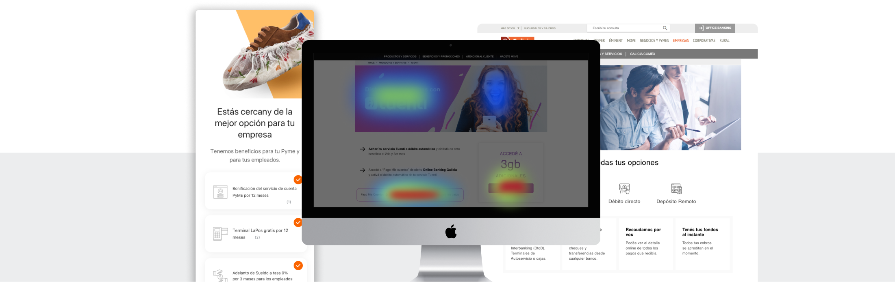
Making Complex Campaigns Understandable
Galicia Bank
UX Designer — Marketing Collaboration
Argentina
2014-2020
At Galicia Bank, I partnered with the Marketing team to design and optimize landing pages across a wide range of products and initiatives — insurance, loans, promotions, and customer acquisition campaigns. The work went far beyond translating PowerPoint presentations into screens. Each initiative required understanding business goals, organizing information for different audiences, and continuously refining experiences based on how people actually used them.
Over the years, these projects taught me something that still shapes how I approach design today: successful pages aren't built by adding more content. They're built by understanding what people actually need and when they need it.
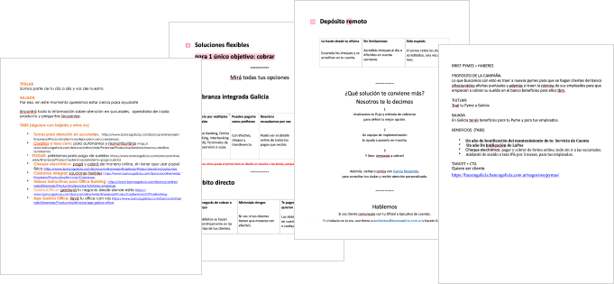
Marketing campaigns moved fast, and briefs rarely arrived as design-ready documents. Most started as presentations, spreadsheets, or Word files — complete from a business perspective, but written for internal teams, not customers. Legal requirements, product conditions, and campaign messaging were all present, but without hierarchy, without flow, and without any consideration for the person who would actually read them.
The added complexity was audience. Many pages needed to speak to two completely different people at once: an individual customer — perhaps a young adult opening their first bank account — and a business owner managing company finances. Same page. Completely different needs. The challenge was creating experiences that felt relevant to both without becoming incoherent to either.
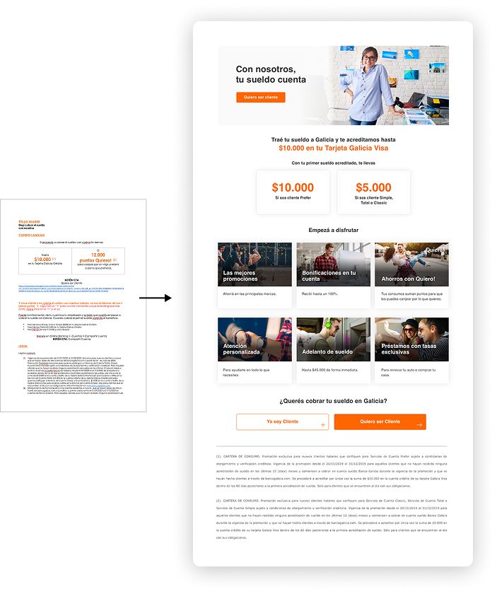
As the volume of campaigns grew, designing every page from scratch became unsustainable. I started approaching the work as a system rather than a series of individual requests — establishing reusable structures, consistent patterns, and information hierarchies that could be adapted across products. This let the team move faster while keeping the customer experience coherent. A new insurance product or loan campaign didn't need a new design language. It needed the right content in the right structure.
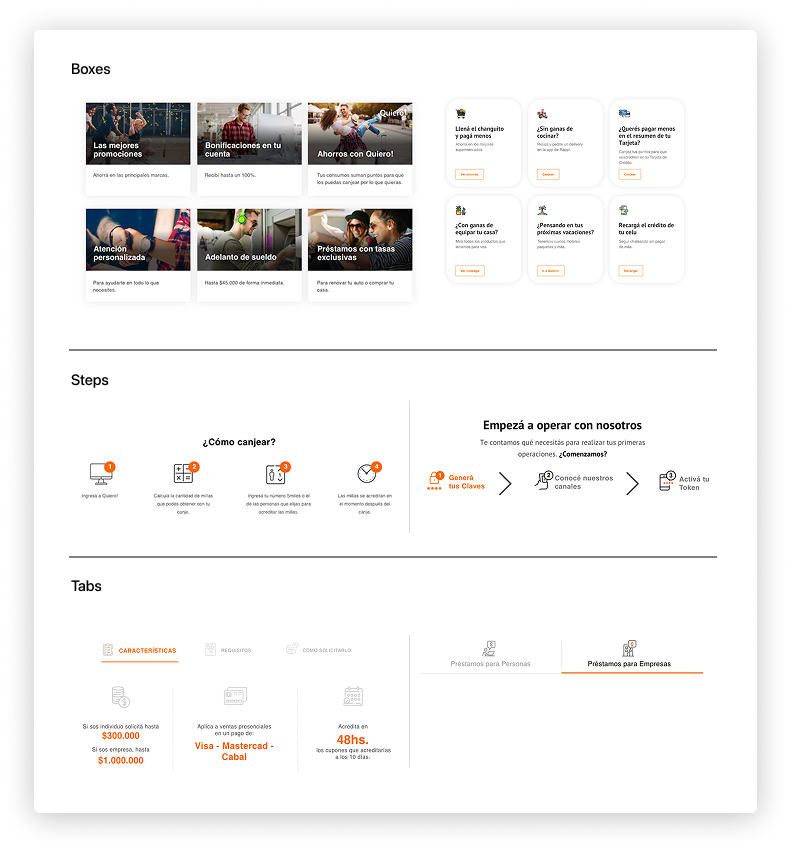
Analytics, heatmaps, and A/B testing became a central part of how we worked. One project made the value of that concrete.
We were designing landing pages for insurance products — an overview page listing all options, and individual pages for each: home insurance, bike insurance, theft coverage. The overview page performed well. The individual product pages didn't. The "Get Insured" button — the one that took users into Online Banking to complete the purchase — was getting almost no clicks.
On desktop, the content was short enough that the button was visible without scrolling. On mobile, it sat at the bottom of a long page. Looking at Hotjar recordings and analytics, a pattern emerged. And understanding the context reframed the problem.
Most visits were happening around midday, on mobile, during lunch breaks. Users weren't researching insurance in planned sessions at home. They were checking pages in short windows of free time — while eating, between meetings. By evening, they'd moved on. That one midday moment on mobile was often the only window we had. The issue wasn't the product or the messaging. It was that the most important element on the page was unreachable at the moment people needed it.
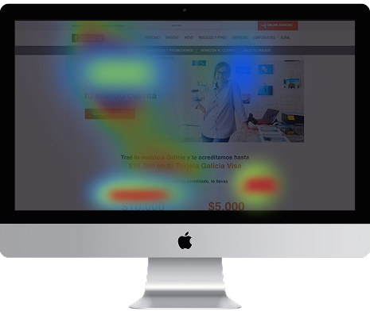
We tested several approaches. A floating button that followed the scroll felt intrusive — users noticed it as a distraction. A fixed button anchored to the bottom of the screen worked. Simple, persistent, always within reach without interrupting the content.
The solution wasn't sophisticated. But it worked because it was designed around how people were actually using the page, not how we assumed they would. That principle extended beyond this project. Again and again, understanding context — when, where, and why someone arrives at a page — mattered more than adding features or refining visuals.
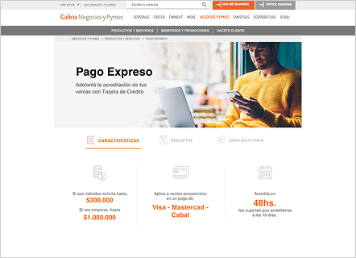
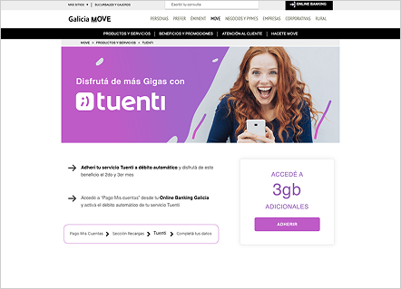
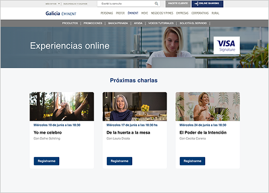
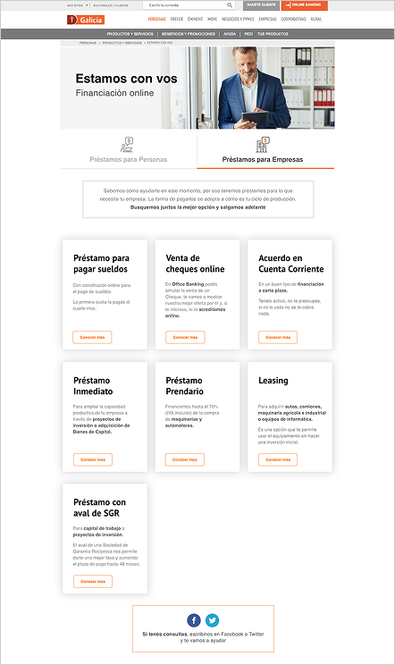
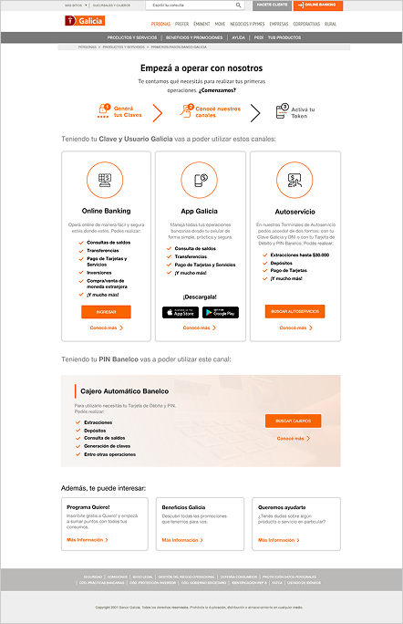
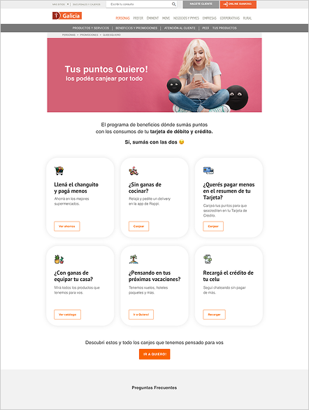
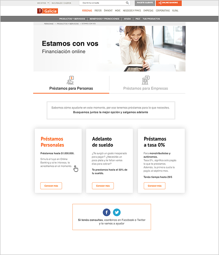
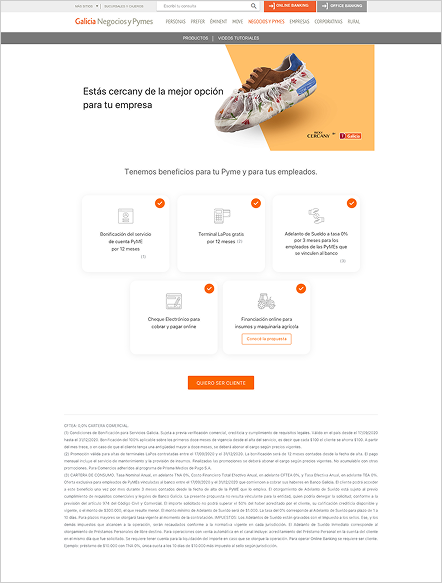
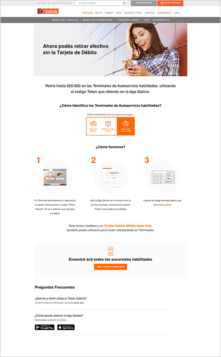
Working on these projects changed how I think about design. Early on, I focused mostly on clarity — making information easier to understand. Over time, I realized that clarity alone isn't enough.
People don't arrive at pages as rational decision-makers with unlimited attention. They arrive with motivations, concerns, distractions, and very little time. Understanding why someone might want a product — what they're worried about, what would make them confident enough to act — often mattered more than refining layouts or adding more content.
It taught me that behavior makes sense when viewed in context. And that's still the part of design I find most interesting.